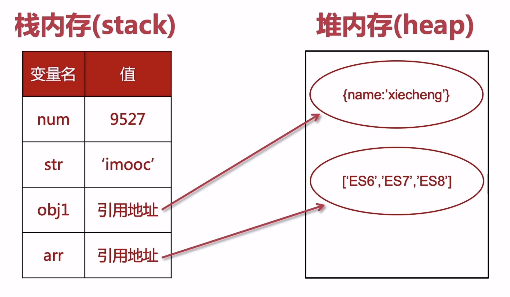

一、新的声明方式：let
- 不属于顶层对象 window
- 不允许重复声明
- 不存在变量提升
- 暂时性死区
- 块级作用域
1.1 不属于顶层对象 window
var 声明方式：写 var 和不写 var 有区别
写 var 是在当前作用域下声明一个变量；不写 var 是给全局对象 window 添加了一个属性，并且对属性进行了赋值。（可以使用 delete 进行验证，delete 只能删除属性不能删除变量）
1 | // 全局环境下 |
既然 a 是一个变量，为什么通过 window.a 也可以访问到变量 a ？这是 JS 作者在设计之初的一个很大的问题，作者将顶层对象的属性和全局变量进行了挂钩。这也是被很多人诟病的问题之一，因为当我们做一个大型项目的时候，里面有很多全局变量，如果这些全局变量都被挂载到 window 对象下面的话，那么 window 这个变量就会变得越来越大，我们也将这个称为污染全局变量。而新的声明 let 就解决了这个问题，let 不属于顶层对象 window，使用 let 声明的全局变量不会与顶层对象的属性挂钩。
1.2 不允许重复声明
1 | var a = 5 |
1.3 不存在变量提升
1 | console.log(a) // 输出 undefined |
以上代码不会报错，因为 var 会变量提升，相当于以下代码：
1 | var a |
但是 let 不存在变量提升：
1 | console.log(a) // 报错 |
1.4 暂时性死区
ES6 规定，如果区块中存在 let 和 const 命令，这个区块对这些命令声明的变量，从一开始就形成了封闭作用域。凡是在声明之前就使用这些变量，就会报错。
总之，在代码块内，使用 let 命令声明变量之前，该变量都是不可用的。这在语法上，称为“暂时性死区”（temporal dead zone，简称TDZ）。
1 | var a = 5 |
以上代码会报错，因为花括号里形成了暂时性死区，相当于一个封闭的作用域。在这个封闭的作用域内，我们先使用 a 再用 let 定义 a 就导致了错误。有些暂时性死区是很隐蔽的，如下所示：
1 | function foo1(a = b, b = 2) { |
函数名后面的小括号内行成了一个暂时性死区。
暂时性死区的本质就是防止变量在声明之前被使用。
1.5 块级作用域
我们都知道，在 ES5 中使用 var 定义的只有全局作用域和函数作用域，不存在块级作用域。但是在 ES6 中增加了块级作用域。
1 | for (var i=0; i<3; i++) { |
还有一点值得注意的是，在 ES5 中，如果 if 后面只跟了一个语句，是可以省略花括号的；但是在 ES6 中，块级作用域是不可以将花括号省略掉的。如下：
1 | if (true) var a = 5 // 不报错 |
当然，我们的建议也是无论在什么时候都要把这个花括号写上。
1.6 补充
1 | for (var i=0; i<3; i++) { |
以上代码会输出三个3，因为定时器属于异步操作，要等到同步操作执行完毕且时间到达后才执行。因此当执行定时器执行时，for 循环已执行完毕，i 等于3。如何能够输出 0、1、2 呢 ，方法一就是使用我们以前学过的闭包：
1 | for (var i=0; i<3; i++) { |
还有一种方法就是使用 let，如下所示：
1 | for (let i=0; i<3; i++) { |
这样也可以输出0、1、2。我们看一下以上代码被编译成 ES5 的时候是怎样的：
1 | var _loop = function _loop(i) { |
也就是使用 let 方式，当代码被转化成 ES5 语法时，会自动形成一个闭包。
可以进入 babel 官网，点击试一试，可以在线地将 ES6 语法转化成 ES5 语法。
二、新的声明方式：const
- 不属于顶层对象 window
- 不允许重复声明
- 不存在变量提升
- 暂时性死区
- 块级作用域
const 与 let 的区别就是，let 声明的是变量，而 const 声明的是常量。
ES5 中定义常量的 API 如下：
1 | // 给 window 对象定义名为 PI 的属性 |
在 ES6 中直接使用 const 声明的就是常量，并且 const 声明的变量需要在声明的时候就被赋值。
1 | const a |
我们知道，基本类型的值存在栈内，引用类型的值存在堆里面，栈里只存放了引用类型的引用地址。如下所示：
const 定义的引用类型的引用地址不可以改变，但是引用类型的值可以改变。
1 | const obj = { |
使用Object.freeze()可以让 const 定义的对象和基本类型一样，值不能被改变。
1 | const obj = { |
但是 Object.freeze() 实现的是浅层冻结，如下所示，它只能冻结 skill 属性的引用地址，但是冻结不了里面的值。如果还想冻结 skill 只能再补充 Object.freeze(obj.skill)。
1 | const obj = { |

Litchi
怕什么真理无穷，进一寸有一寸的欢喜